Aluminium
Fin et rigide, il permet de grandes surfaces vitrées avec des montants discrets. C'est notre spécialité : vérandas, pergolas, baies et fenêtres.
Illustration pergola bioclimatique, vue en coupe
Montbrison · Loire showroom de 200 m²
Vérandas, pergolas et menuiseries en aluminium, bois et PVC, conçues, fabriquées sur mesure et posées par une entreprise familiale de Montbrison, de père en fils depuis 1973.
Une présence en ligne claire pour montrer vos réalisations, rassurer localement et faciliter la prise de contact.
Orientez les lames de la pergola dessinée
Mi-ombre : la lumière passe entre les lames, l'air circule.
Une présence utile
Le savoir-faire reste au centre, avec un parcours plus simple pour les personnes qui vous découvrent ou préparent des travaux.
Être trouvé plus facilement à Montbrison, dans la Loire et autour, sur mobile comme sur ordinateur.
Une galerie claire et des réalisations bien racontées pour donner envie de se projeter.
Des appels à l'action visibles, au bon moment, pour transformer une visite en échange.
Une navigation confortable, rapide et accessible quand un futur client consulte depuis son chantier.
La pergola bioclimatique
Sa toiture est faite de lames orientables. En les faisant pivoter, vous réglez la lumière : grandes ouvertes pour profiter du soleil, entrouvertes pour une ombre légère où l'air circule, fermées pour vous abriter sous une vraie toiture.
Un nouvel espace pour concilier toutes les saisons : l'été, elle protège du soleil et crée un espace rafraîchissant ; l'hiver, la lumière apporte sa chaleur.
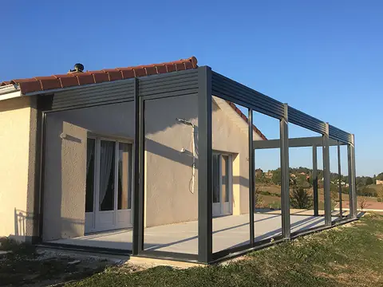
Savoir-faire
Nous concevons, fabriquons sur mesure et posons vos menuiseries, pour les particuliers comme pour les professionnels. Tout est à voir au showroom.
Concepteur et fabricant de vérandas de père en fils depuis 1973, l'entreprise familiale est dirigée aujourd'hui par Julien Chauve. Elle est spécialisée dans la menuiserie aluminium, et plus particulièrement dans la véranda aluminium et bois.
Réalisations
Vérandas, pergolas, baies, portes et volets posés chez nos clients. Choisissez une catégorie, puis touchez une photo pour l'agrandir.
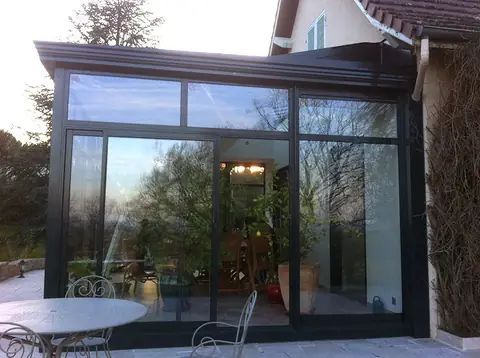
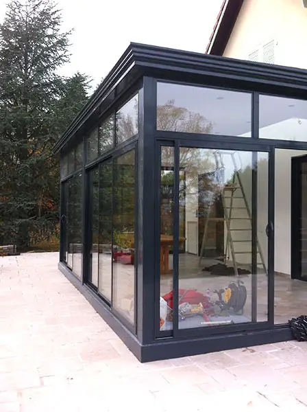
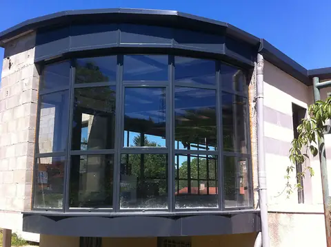
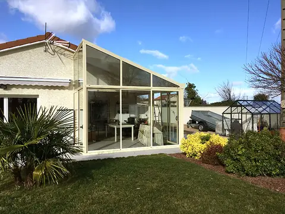
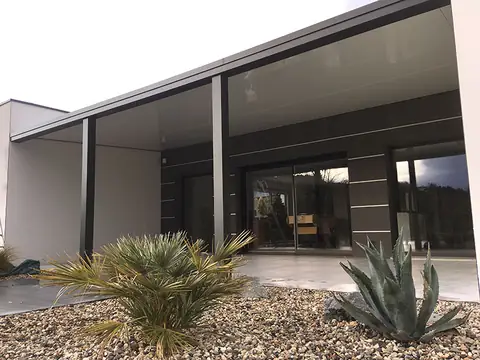
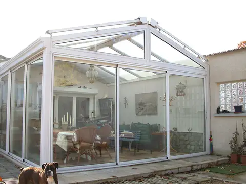
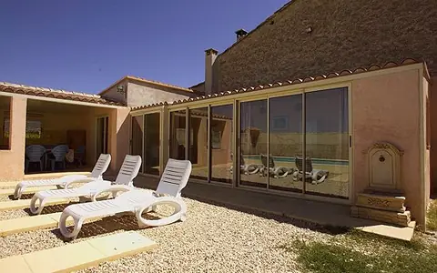
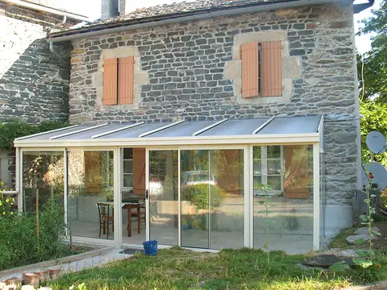
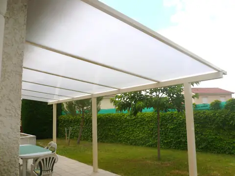
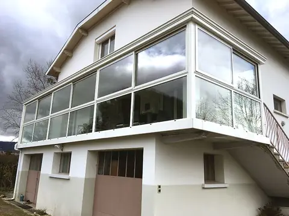
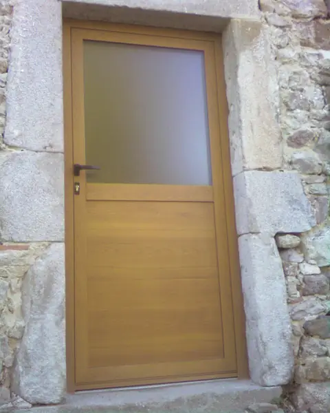
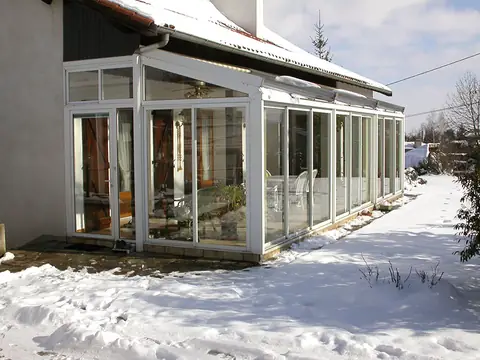
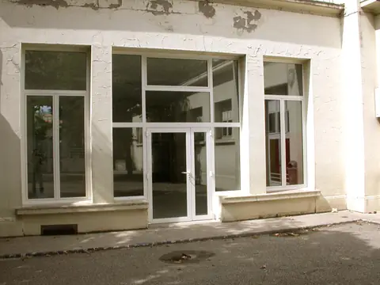
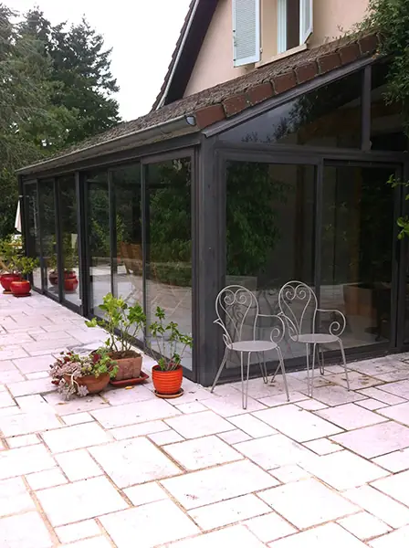
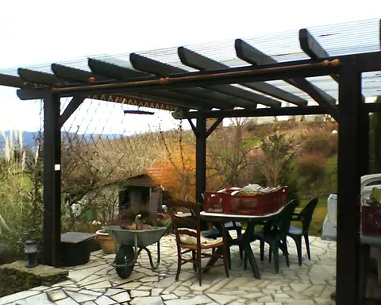
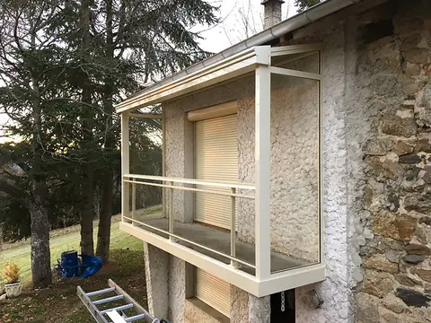
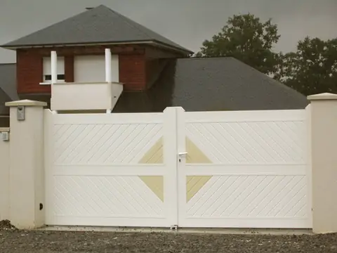
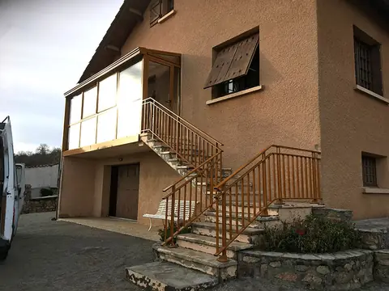
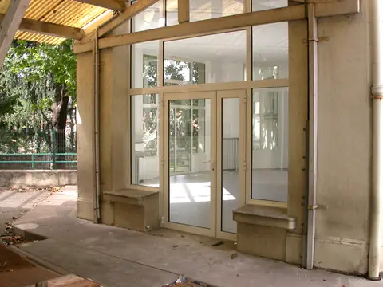
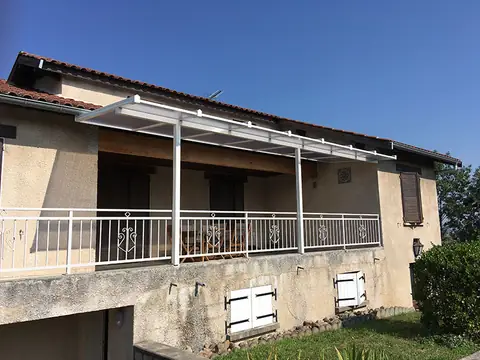
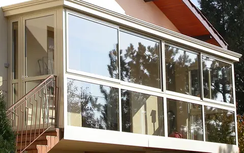
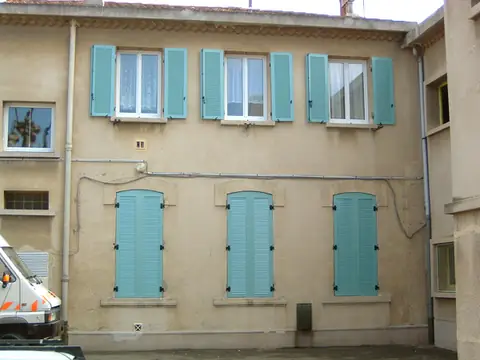
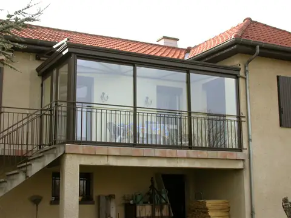
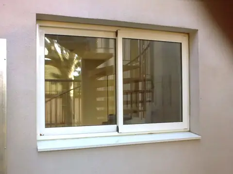
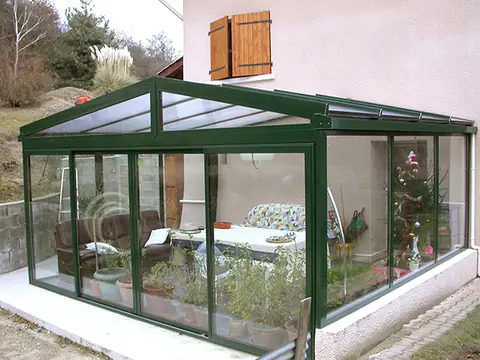
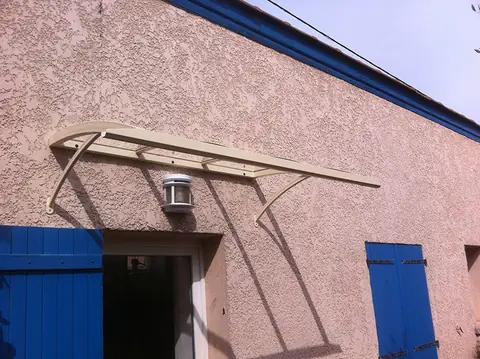
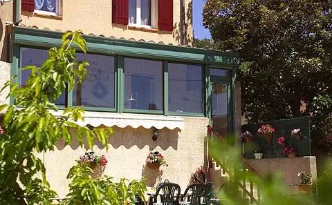
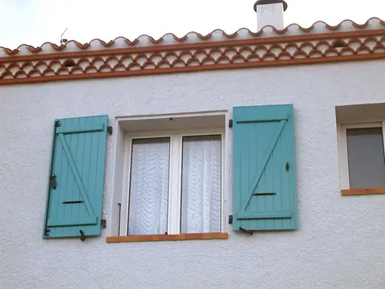
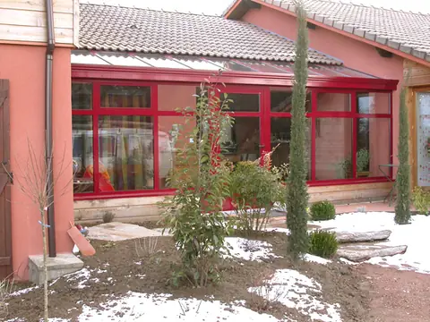
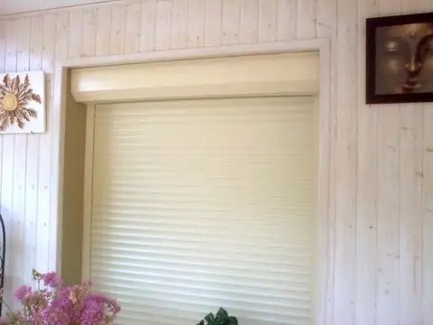
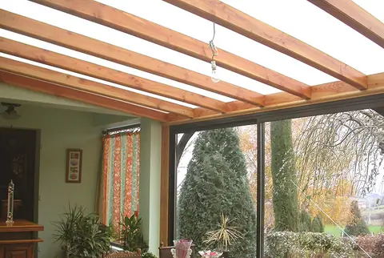
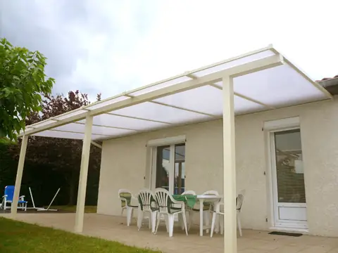
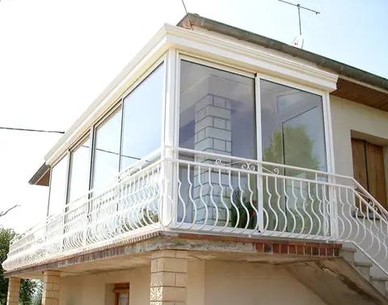
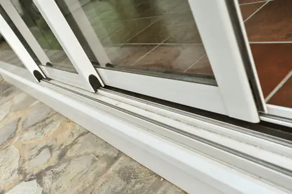
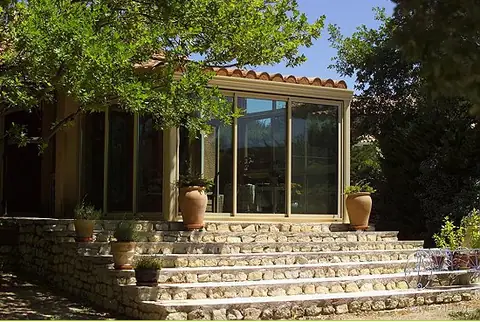
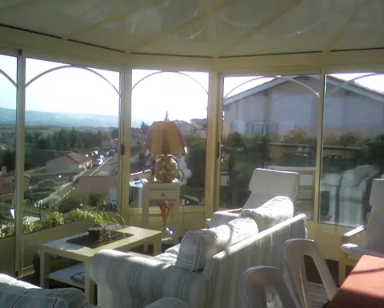
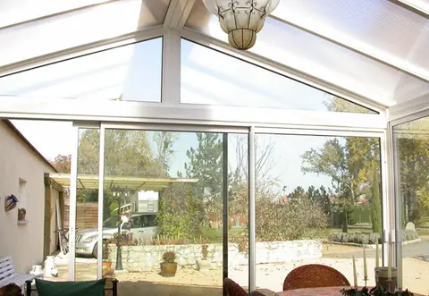
Photos : site actuel d'Alu Confort du Forez.
Matériaux
Nous travaillons les trois. Le bon choix dépend de votre maison, de la taille des vitrages et de l'entretien que vous souhaitez : on en parle ensemble, et les trois sont à découvrir au showroom.
Fin et rigide, il permet de grandes surfaces vitrées avec des montants discrets. C'est notre spécialité : vérandas, pergolas, baies et fenêtres.
Chaleureux et naturel, il s'accorde aux maisons de caractère. Nos vérandas existent en bois, ou en mixte aluminium et bois.
Une solution simple d'entretien, courante pour la rénovation des fenêtres et pour les volets.
Dessins : coupes de principe (illustrations), pas des plans de fabrication.
Votre projet
Un seul interlocuteur du début à la fin : nous concevons, fabriquons, posons et suivons votre installation.
Au téléphone, par e-mail ou au showroom de Montbrison.
Nous nous déplaçons à votre domicile pour parler de votre projet et prendre les cotes.
Vous recevez votre devis gratuit et, pour une véranda, des visuels pour vous projeter.
Sur mesure. Les vérandas sont fabriquées dans nos ateliers, à Montbrison.
Nous posons votre installation et en assurons le suivi.
Fourniture et pose de menuiseries extérieures, pour le domaine « Fenêtres, volets, portes donnant sur l'extérieur ». Certificat valable jusqu'au 25/03/2029, vérifiable sur l'annuaire officiel France Rénov'.
Avis clients
Des extraits de messages que nos clients nous ont envoyés, publiés dans la rubrique « Avis clients » de notre site.
Nous sommes extrêmement satisfaits des travaux que vous avez réalisés pour nous : très bonne qualité du rendu global, belles finitions, respect des délais selon le planning établi par Amélie.
Pas de souci pour la pose des lames, nous sommes satisfaits du résultat.
On est super contents de l extension de la véranda que vous avez réalisée. Merci beaucoup.
Nous sommes retournés aux Pays-Bas pour le moment, mais nous sommes très contents du travail réalisé cette semaine.
Merci à vous pour le bon travail que vous avez fait.
Je suis ravie c'est un vrai bonheur. Merci beaucoup à vous et à votre assistant.
Je suis très satisfait de la réparation de ma porte d'entrée, les barreaux apportent une sécurité supplémentaire et la finition est très bien.
Le résultat de la pergola nous plaît vraiment.
Le travail de la pergola me satisfait totalement, il n'y a pas de souci.
Le showroom
Vérandas, pergolas, fenêtres, portes d'entrée, volets, verrières, portails et clôtures, garde-corps, portes de garage, stores intérieurs et extérieurs, moustiquaires… Venez découvrir l'ensemble de nos gammes et toucher les matériaux.
Alu Confort du Forez 68 rue des Grands Chênes, 42600 Montbrison
Pour préparer votre visite, appelez-nous au 04 77 97 62 79.
La carte Google Maps se charge seulement si vous cliquez.
Zone d'intervention : toute la Loire et sa périphérie — Montbrison, Montrond-les-Bains, Feurs, Boën, Saint-Germain-Laval, Noirétable, Saint-Étienne…
Présentation du concept
Cette proposition met en scène les vérandas, pergolas et menuiseries avec un parcours plus lisible, des preuves visuelles et des contacts faciles à trouver.
À valider ensemble : les visuels, les textes, les réalisations et avis publiables, les informations pratiques et les appels à l'action. Rien ici ne vaut validation ou publication officielle.
Parler de la suiteContact
Un appel, un e-mail ou une visite au showroom : dites-nous ce que vous imaginez, Julien Chauve vous conseille.